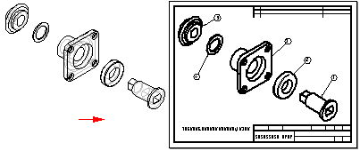
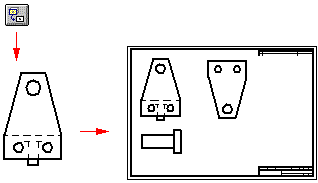
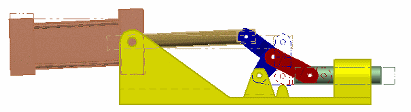

Assembly drawings
Creating drawings of assemblies
When you create a part view of an assembly, you can control the display of the individual parts and subassemblies in the assembly. For example, you may want to hide certain parts or specify that a part is displayed as a reference part. You also can control the display of weld beads and material addition features in a part view of a weldment assembly.
-
You can use the Model Display Settings button on the View Wizard command bar to specify which parts you want to display in the drawing view before you place it on the sheet.
-
You also can use the display configurations, PMI model views, and zones you saved in the Assembly environment to control the display of the parts in the drawing view. When you select an assembly document in the Select Model dialog box of the Drawing View Wizard, you also can select the display name you want to use from the .cfg, PM Model View, or Zone list on the Assembly Drawing View Options page.
Example:You can use an exploded display configuration name to place a drawing view of an exploded assembly.

-
After placement, you can select the drawing view and edit its properties using the Properties command on the shortcut menu.
Example:For example, you can designate that a part or subassembly in the drawing view is a reference part, and you can choose whether to show it as a transparent or nontransparent part.
For more information, see Reference parts.
-
After placing an initial drawing view of an assembly, you can create drawing views of one or more assembly parts.
Documenting multiple parts in one draft document
You can document multiple parts of assemblies in a single draft document. For example, instead of creating a separate draft document for the assembly and for each part, you can use the View Wizard command to place drawing views of the assembly and its individual part, components, and subassemblies into one draft document. This makes document management and maintenance much simpler.

For more information, see Create assembly part views with the View Wizard.
Controlling edge display in an assembly drawing
You can speed the creation and update of drawing views in a large assembly by minimizing edge display.
-
For a single drawing view, you can clear the following options on the Assembly Drawing View Options page in the Drawing View Creation dialog box:
-
Show hidden edges
-
Show edges of hidden parts
-
-
To make these changes for all assembly drawing views, clear the same options on the Edge Display tab in the Solid Edge Options dialog box.
You can create a draft template file with these options cleared and use it to create all the drawing views of your assemblies without hidden lines.
Creating draft quality views of assemblies
You can use the Create Draft Quality Drawing Views option on the Assembly Drawing View Options page of the Drawing View Wizard to quickly create a draft-quality drawing of a complex assembly. To allow draft quality views to be quickly generated, only visible edges are created.
You can use draft quality views as input for principal views, auxiliary views, cutting planes, and broken-out section views. You can add balloons to draft quality views and create parts lists from them. You can place elements that connect to a drawing view with a leader, such as balloons and callouts. Some of the view properties, such as Hidden edge display, can be fixed. Others, such as scale, can be modified.
You can use the Activate Parts for Dimensioning option on the Assembly Drawing View Options dialog box of the Drawing View Wizard command to activate (load into memory) the parts in the assembly so that you can use them for dimensioning and other operations that require precision. This option is only available when Create Draft Quality Drawing Views is also checked.
Creating drawings of alternate assemblies
You can create drawing views of alternate assemblies. Alternate assemblies contain multiple versions of the same part (family of parts) or they contain same part in multiple positions (alternate position). When you create a drawing view of an alternate assembly, you can use the following tabs in the Drawing View Creation Wizard to define the view:
-
Drawing View Creation Wizard (Select Family of Assembly Member) —Specifies the family of parts assembly member to show in the drawing view. When you select the member from the Family Member list, a preview of the member is displayed. When you click the Next button, you can define any other assembly drawing view options you want. For example, you can specify that the drawing view is placed as a draft quality view.
-
Drawing View Creation Wizard (Alternate Position Assembly)—Selects the different positions you want to show in the drawing view. You must specify which member to show in the primary position and which alternate positions to show.
To learn how, see Create an alternate position assembly drawing view.

Creating drawings of weldment assemblies (.asm)
When creating a drawing of a part in a weldment assembly, you can create drawing views that document the process-specific stages of the weldment process by first saving the part to a new name using the Save Model As command.
This is useful when the part has assembly features that represent weld preparation and post-weld machining operations. For example, you may need to apply chamfers to parts in the assembly before constructing a groove weld.
Creating drawings of weldments (.pwd)
When creating a drawing of a weldment part, you can create drawing views that document the process-specific stages of the weldment process. When placing a weldment drawing view, you can use the View list on the Weldment Drawing View Options dialog box to specify whether the drawing view reflects the machined view, welded view, or assembly view. For example, when you set the Machined View option, you can place drawing views that document the post-weld machining that was done to the weldment.
If you defined weld labels in the weldment document, you can use the Tie To Geometry option on the Weld Symbol command bar to extract the weld labels into the drawing.
When you set the Tie To Geometry option, only edges that have had weld labels assigned to them are selectable.
For more information, see the following help topics:
How do I
Create assembly part views with the View WizardCreate a simplified assembly drawing view and parts list
Create an alternate position assembly drawing view
Make a part a reference part
Display construction and reference geometry in a drawing view